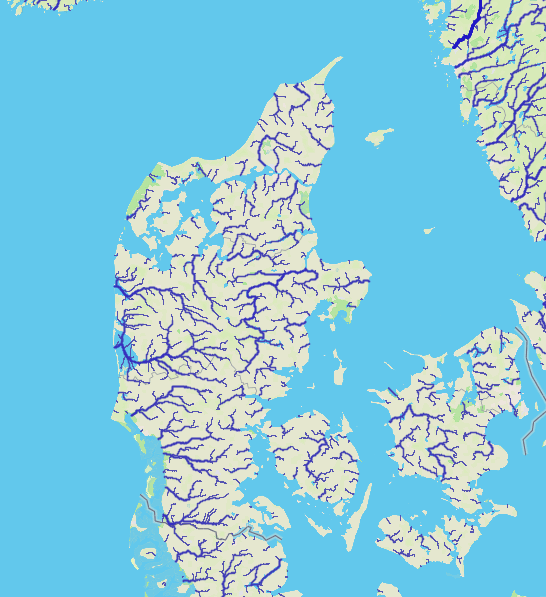

Kort over danske vandløb - baseret på højdedata.
1. Hvad er et topografisk opland?
2. Hvad er et topografisk vandskel?
3. Hvad menes med ‘gundvandoplandet’ - og hvorfor er det særligt vigtigt i Danmark?
4. Indtegn topografiske vandskel på kortet, og identificer nogle af danmarks største topografiske oplande.
5. Hvor i Danmark finder vi de største topografiske oplande?
6. Forsøg ud fra kortet, at identificere og indtegne den midtjyske højderyg.